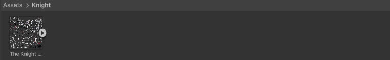
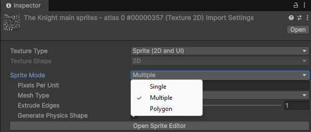
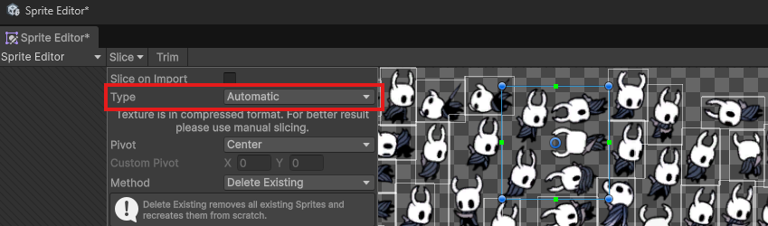

空洞騎士重現 - 素材準備
在開始重現空洞騎士中的場景與環節前，我們得先準備一下要用到的素材，如同上一篇提到的，我們會借助社群提供的 sprites 來提高還原度，而這篇文章就來講講什麼是 sprite，以及要怎樣在 Unity 中使用。
Sprite 是什麼
Sprite 是指用於遊戲畫面使用的拼貼圖 - 將複數張小圖合併在一張大圖裡面，此文的封面圖就是空洞騎士中敵人的 sprite，sprite 主要是用來呈現遊戲中的場景與人物，至於為何要把多張圖片拼在一起，常見有兩種理由:
- 呈現動畫 - 由於動畫就是由連續圖片組合而成，把連續圖片拼貼在同一張圖片內，可以方便檢視動作，也方便匯入到 Unity 的動畫視窗。
- 加速載入 - 當遊戲要呈現一個畫面時，必須先把要使用的圖檔從硬碟載入記憶體，一個場景內出現的物件越多，就得越頻繁的去硬碟翻資料，這是相當費時的，所以說減少圖檔的數量就相當重要，為此可以將出現在同一個場景的圖片拼成一個 sprite，一次讀取就能載入全部的物件，然後在記憶體內進行分割。
Sprite 處理
匯入 Sprite
當我們要把 sprite 用在遊戲裡時，得先告訴遊戲引擎怎樣去分割這些影像，在 Unity 可以透過以下步驟達成:
- 匯入圖檔 - 把外部的圖檔放到 Unity 專案底下，這裡擺到 Assets 底下並開了一個 Knight 資料夾，使用的 sprite 來源為 hollow knight sprite。 
- Open Sprite Editor - 點選 sprite 檔案，選擇 sprite 類型為 multiple，代表此圖是由多張圖片組成，然後點擊 Open Sprite Editor。 
- 調整分割座標 - 如前面提到的，空洞騎士的 sprite 內的圖檔有經過大量翻轉與移位，沒辦法以定格的方式去分割，所以這邊靠 Unity 自動分割 (Automatic) 來進行，下圖的白框就是分割結果。 
使用分割好的圖檔
由於前面提到的分割複雜度問題，在此會更傾向於使用分割好的圖檔，這樣雖然會失去 sprite 載入速度的好處，但可以省去許多功夫，讓我們的學習更方便~~~
在針對主角 (稱他為小騎士吧) 的動作會使用 hollow knight mod material 整理好的資料，包含小騎士的各種動作圖檔，至於為何會有這個東西呢? 主要是為了小騎士的外觀更換，網路上有很多模組是修改腳色的 sprite 來達成外觀變換，但如果直接修改 sprite 難度有點高，因此會先分割 sprite 然後針對每個動作的小圖修改，然後再合成回 sprite 並包回遊戲裡。
你可能會注意到這些圖檔有些會包含紅色框框，這是在說明能進行修改的範圍，超過的部分合回 sprite 時就會被覆蓋掉。但我們現在是要直接使用這些圖檔，得去除紅框才行，我有撰寫一個簡單的 python 程式 來去除紅框，效果如上圖所示，有需要的讀者歡迎使用。
總結
到此我們就取得了重現空洞騎士所需的素材，下一篇就會開始針對部分橋段進行重現，來了解遊戲環節是怎樣製作出來的~~~ 最後還是要強調本文使用與提到的圖檔皆為 team cherry 所繪製，沒有他們就不會有空洞騎士，此外資料來源是由廣大社群努力建構而成，由衷感謝他們讓後人能更理解這部神作的巧思與奧秘。